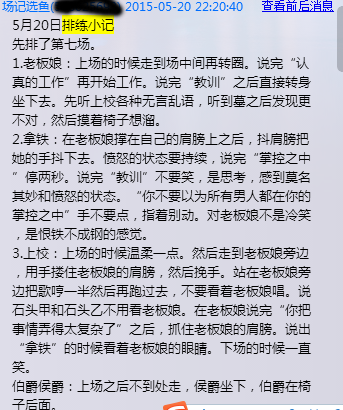
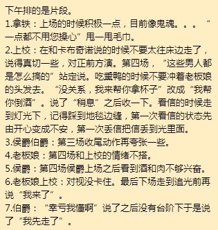
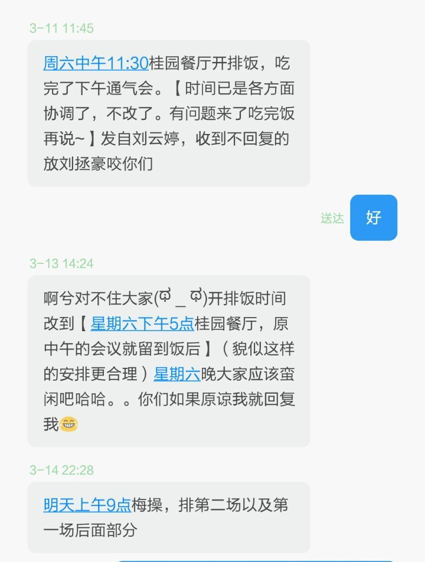
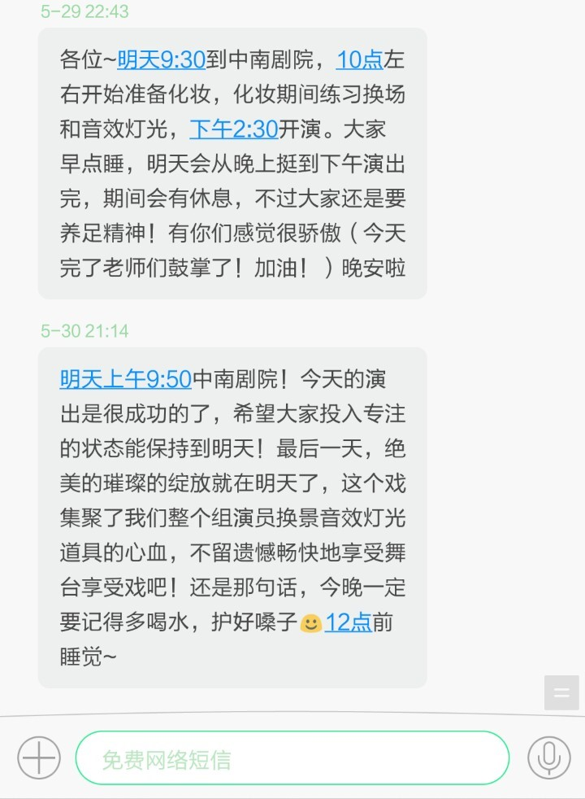

0
“一直走就是瀑布！”我加大音量。 “一直走就是瀑布。”她复述一遍。
——《世界尽头与冷酷仙境》
1
去上海的火车上，遇到了一轮落日。
铁轨在列车身后按部就班地延伸，让人莫名其妙地想到核糖体在RNA上游走的画面——联系与比喻。夕阳静默地追随，好像在与之赛跑一般——一路向东。
2
放下手中的《世界尽头与冷酷仙境》，却首先想到了《海边的卡夫卡》里的句子：或许世上几乎所有人都不追求什么自由，不过自以为追求罢了。
那个15岁的少年，离家出走，远赴四国，然而不断地寻找，带来的却是不断的失落，周而复始，印证着宿命一般的预言——而卡夫卡这个名字，似乎也是一个抽象的暗喻。
太久没有读过长篇小说了。为了找回读书的感觉，挑了一本《世界尽头》，每晚睡前读上一章，看完就睡，竟也慢慢啃下了以前得废寝忘食两三天的长篇。读完之后对故事情节没有太多印象（似乎在村上的书里这也不是最重要的），只是对那些天马行空又恰到好处的比喻望洋兴叹。“一种虚脱感——犹如包在保鲜纸里被投进电冰箱后马上给人关门封死的鱼一样冷冰冰的虚脱感袭上全身。”“ 身体胖墩墩地全是肉，仿佛夜里落了一层无声的厚雪。”“ 沉默犹如细微的尘埃落满自己的身体。”“ 空腹感犹如巨大的空洞，又黑又深，即使投入地下见到的石块也全无任何反响。”在村上的笔下，世间各物的隔阂仿佛被模糊了，而它们之间又好像被另一种特殊的方式连接，万事万物都是隐喻。
围墙，独角兽，影子，图书馆，古梦，湖，世界尽头；
女郎，啤酒，头骨，图书馆女孩，鲍勃 迪伦，冷酷仙境。
语言似乎无法描述这样一种感觉，文字也在它面前败下阵来。有的东西不过很久是不可能理解的，有的东西等到理解了又为时已晚。大多时候，我们不得不在尚未清楚认识自己的心的情况下选择行动，因而感到迷惘和困惑——这世间存在一种无法流泪也不能被理解的悲哀。
2
喜欢汉口的街景，蜿蜒而过的轻轨，转角出现的电车，破旧拥挤的集市，饶满了爬山虎的老房子，路旁高大的法国梧桐。不急着去排戏或者公交坐过了站时，在这个陌生的城市的大街小巷溜达，竟然感到久违的安心和自在。那天偶遇一家三四点，热心的老板听我说起长沙的三四点，一脸笑意地告诉我有个服务员以前在长沙那边做后来回武汉了是一个个子不高有点微胖的女生，边说着主动帮我的水壶打满了水。而我的思绪瞬间被拉回到了清水塘——在那儿的三四点店内墙上，写过“月考加油！”“一定要上人大”，也曾在国家地理和七杯茶蹉跎过无数个本该在试卷里度过的时光，曾躺在操场上看星星，站在路边和人聊天，那儿也有这样漂亮的红房子、高大的法国梧桐和干净的街道。原来我们喜欢的，不过是与过去似曾相识的现在。
3
“灯光，音效准备。”
爱开场时温暖的橘黄色灯光慢慢亮起的感觉，爱黑暗里声嘶力竭地喊出的口号，观众屏住呼吸，走出幕布的那一刻起，你不再是你自己，你是公主，是剑客，是仆役，是渔夫，是舞台上或欢笑或悲歌的人物，也是在狂欢中孤独的戏子。爱谢幕时悠扬欢快的音乐，经久不息的掌声，高声说出自己名字时的激动与自豪。
4
伯爵让卡布奇诺找的那面镜子——我总是喜欢关注每一个故事里过客般的事物。那面镶满了钻石和红宝石的哥德式镜子，对伯爵来说是要送给老板娘的礼物，对老板娘来说只是可有可无但是肯定会装模作样地收下的东西，它成为剧情的焦点，在剧情转折之后就没有人再想起——就像动作片里被主角们撞飞的汽车，不知道它会不会引起后面的交通混乱甚至引发一个新的故事呢？但可惜在所有电影里它们都只是无人关注的过客。
5
场记


导演


小白，靳哥，马老师，莎莎老师。老板娘，上校，伯爵，侯爵，拿铁，卡布奇诺，贵妇甲乙。女店主。
——剧终人散，这样一个盛大而恢弘的舞台，我斗胆记之。
6
也许再坐一万次通往汉口北的列车也到不了世界尽头，再演一百场卡布奇诺也找不到那面镜子，但想想未谢的幕，舞台上还没有亮起的灯光，又似乎燃起了一丝热血。因为话剧，我们品味着不属于自己的喜怒哀乐，也更加地热爱自己的生活。
一直走就是瀑布。一直走就是瀑布。
后记
还没演完《女店主》就想写的东西，各种原因一拖再拖。灵感丢得七零八碎，看完话剧节闭幕式，实在是觉得再拖下去就要忘了。本来想写三篇，将就着凑成一篇，多少也算留个纪念吧。